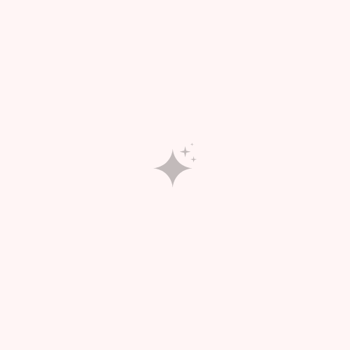
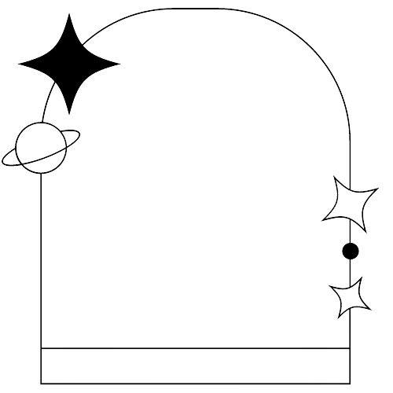

HOME
SOBRE
USE
ORÁCULO

O oráculo
aqui eu vou tentar escrever algo sobre a ideia do projeto. definir também a ideia do design, baseado em algo clean. imagens usadas do canvas, criadas por mim mesma. aqui eu vou tentar escrever algo sobre a ideia do projeto. definir também a ideia do design, baseado em algo clean. imagens usadas do canvas, criadas por mim mesma. aqui eu vou tentar escrever algo sobre a ideia do projeto. definir também a ideia do design, baseado em algo clean. imagens usadas do canvas, criadas por mim mesma.
